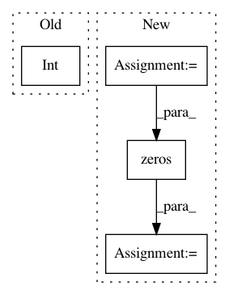

45a10bc6d708fade197a37bfbc62312caf70e6a7,keras/layers/convolutional_recurrent.py,ConvLSTM2D,get_constants,#ConvLSTM2D#Any#Any#,438
Before Change
input_shape = K.int_shape(inputs)
input_dim = input_shape[-1]
ones = K.ones_like(K.reshape(inputs[:, 0, 0], (-1, 1)))
ones = K.tile(ones, (1, int(input_dim)))
def dropped_inputs():
return K.dropout(ones, self.dropout)
After Change
constants.append([K.cast_to_floatx(1.) for _ in range(4)])
if 0 < self.recurrent_dropout < 1:
shape = list(self.kernel_shape)
shape[-1] = self.filters
ones = K.zeros_like(inputs)
ones = K.sum(ones, axis=1)
ones = self.input_conv(ones, K.zeros(shape),
padding=self.padding)
ones += 1.
def dropped_inputs():
return K.dropout(ones, self.recurrent_dropout)
rec_dp_mask = [K.in_train_phase(dropped_inputs,
In pattern: SUPERPATTERN
Frequency: 4
Non-data size: 4
Instances
Project Name: keras-team/keras
Commit Name: 45a10bc6d708fade197a37bfbc62312caf70e6a7
Time: 2017-02-17
Author: francois.chollet@gmail.com
File Name: keras/layers/convolutional_recurrent.py
Class Name: ConvLSTM2D
Method Name: get_constants
Project Name: IndicoDataSolutions/finetune
Commit Name: 04573605a3bef45d29d81302bce154f220bbd7f5
Time: 2019-01-15
Author: matthew.bayer@indico.io
File Name: finetune/target_encoders.py
Class Name: OrdinalRegressionEncoder
Method Name: rank_to_thresholds
Project Name: hyperspy/hyperspy
Commit Name: 1ead19b1b50d8a6954671539c8172af7379c3490
Time: 2017-02-10
Author: t.ostasevicius@gmail.com
File Name: hyperspy/roi.py
Class Name: Line2DROI
Method Name: _line_profile_coordinates
Project Name: hyperspy/hyperspy
Commit Name: 8499bfd16fb3dad77572d1af99769317c64436a2
Time: 2017-02-10
Author: t.ostasevicius@gmail.com
File Name: hyperspy/roi.py
Class Name: Line2DROI
Method Name: _line_profile_coordinates